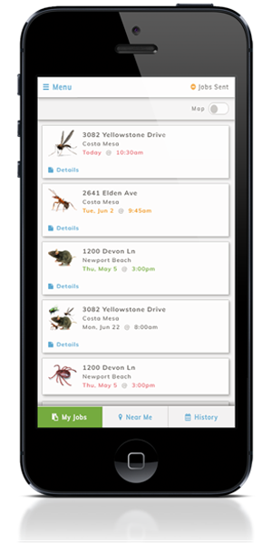
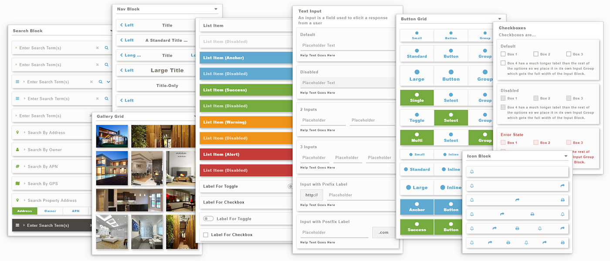
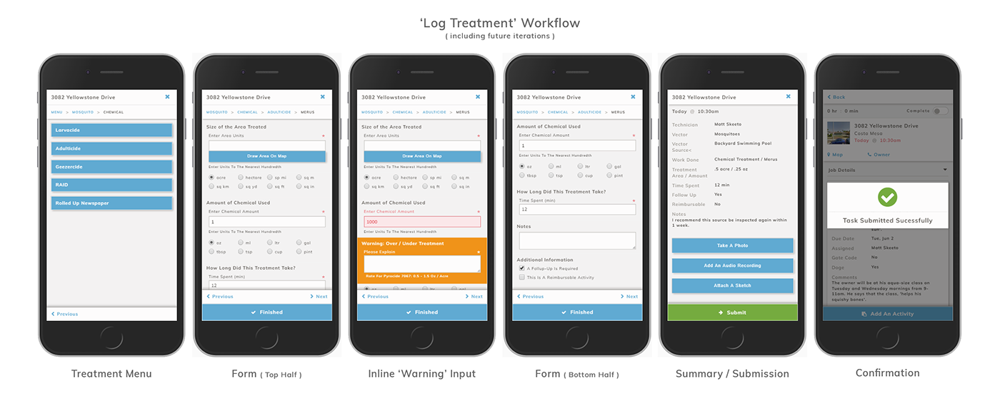

Public Service
FieldForce is a mobile app that helps field technicians service local communities by tracking and recording their daily tasks. Initially designed for vector control agencies, it enables efficient management of mosquito inspection and treatment activities.

2019
Design Lead / UI Engineer
Myself, a Product Lead, and a Development Team of 6
The initial application of FieldForce was designed to assist Mosquito and Vector agencies to control the spread of disease by efficiently assigning technicians to inspect mosquito breeding sites and, if necessary, apply treatment and schedule follow-up visits.
The application records treatment locations, treatment type, and amount. Workflows, such as spray routes, could be configured for auto-logging and recorded without the end user needing to stop and fill out a series of forms. Voice and Bluetooth button inputs are also supported.
We began this project with a disovery phase where user interviews were conducted. I, along with 2 lead developers spent a week on-site with Orange County Vector Control (CA) observing their work habits and documenting common workflows and persistent pain points. My time was spent in the front office fielding community requests for services, riding shotgun on a sprayroute treating mosquito breeding sites, and collecting samples of mosquito larvae from catch basins to send to the lab for analysis. I also spent time speaking with administrators about their need for improvements in managing workflows within their departments.
From my research, I developed the personas that would be served by the application. I then created sets of user stories for each persona that would be used to design and test against.
My research report can be viewed here
User stories can be viewed here
During the development of this project, I was also working full-time on the UI Library that I'd begun while working on LandVision Connect. Due to the larger scale and scope of FieldForce, it became a good project with which to test out my approach to UI architecture.

UI Library - SASS partials generating global CSS
Final template reference was built in HTML/CSS and re-created using React and Handlebars.js by the development team. I reviewed all presentational templates and elements, making updates to the source files as needed to match the reference designs.
